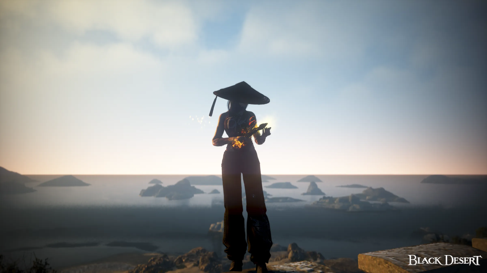
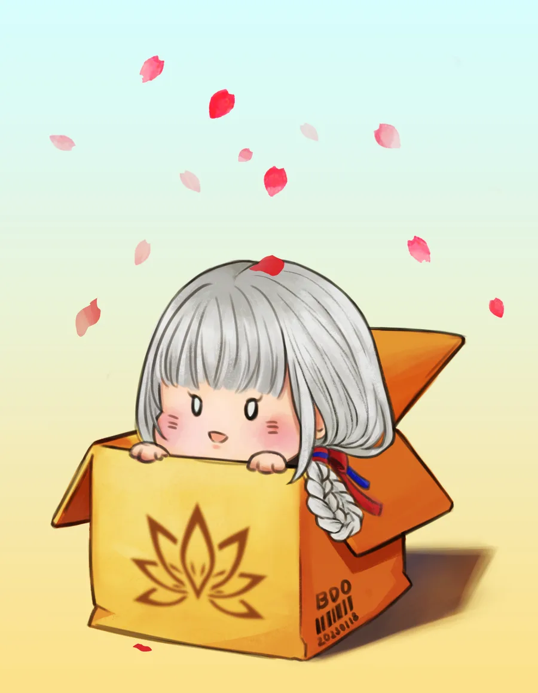

Black Desert
Un MMORPG sur PC, console et mobile. Mes classes préférées, le timer des world boss et quelques screens.
CommencerSélection du personnage
Mes trois classes, dans l'ordre où je les joue.

Main · Éveil
Maegu
Mon main : je farm et je PvP avec. Jouée en éveil (awak), très peu en succession.
Voir le gearSuivi du gear
Où en est chaque perso · mis à jour : —
World boss
Serveur EU · via Garmoth
Mes tâches
Ta liste à cocher · elle se vide toute seule au reset
Journal de l'aventurier
Clique sur un screen pour l'agrandir.